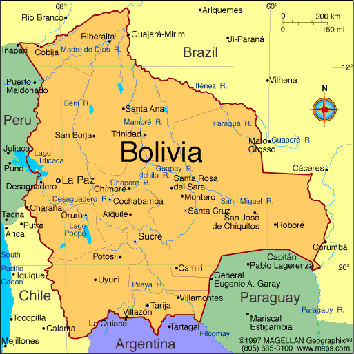
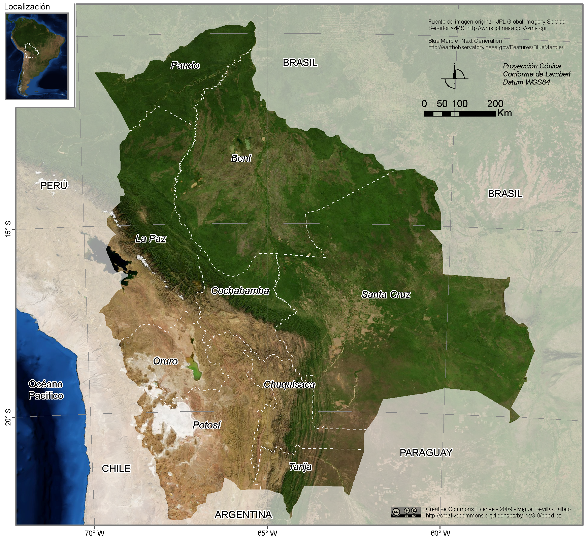
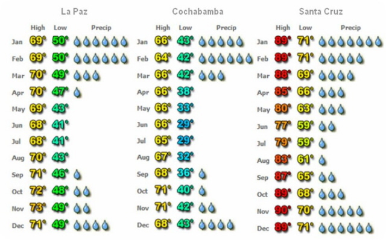

Acerca de Bolivia

Bolivia
(quechua: Buliwya; aimara: Wuliwya; guaraní: Volívia), oficialmente Estado Plurinacional de Bolivia,
es un país soberano situado en la región centro-occidental de América del Sur, políticamente se
constituye como un estado plurinacional, descentralizado con autonomías.
Está organizado en nueve departamentos. Su capital es Sucre, sede del órgano judicial; La Paz, es la
sede de los órganos ejecutivo, legislativo y electoral, además es el epicentro político, cultural y
financiero del país.
Cuenta con una población de cerca de 10,1 millones de habitantes de acuerdo al último censo, del año
2012. Limita al norte y al oriente con Brasil, al sur con Paraguay y Argentina,
y al occidente con Chile y Perú, es un Estado sin litoral y constitucionalmente mantiene una reclamación
territorial a Chile por una salida soberana al océano Pacífico. Su superficie es la sexta más extensa de
Latinoamérica y
comprende distintos espacios geográficos como la cordillera de los Andes, el Altiplano, la Amazonía, los
Llanos de Moxos y el Chaco, siendo uno de los países con mayor biodiversidad en el mundo.
Historia
 Bolivia fue fundada como república en 1925,
luego de un larga guerra de indepencia con la Corona española.
Durante su primer siglo de existencia se suscitaron numerosos eventos políticos y bélicos que marcaron
la historia boliviana, entre ellos se encuentran:
la Guerra del Pacífico (1879-1884), conflicto bélico con el vecino país de Chile, la Guerra Federal
(1898-1899), la cual involucró a los sectores del norte del país (liberales)
confrontados contra los del sur (conservadores) y derivó en el traslado de la sede de Gobierno a la
ciudad de La Paz, y la Guerra del Acre (1899-1903), serie de enfrentamientos
sostenidos con Brasil.
Económicamente, durante esa época se levantó el sector extractivo minero, luego de que éste quedará
parcialmente desmantelado como consecuencia de la inestabilidad política
que trajeron consigo los primeros años de la República. Así surgió en un primer momento un ciclo
productivo ligado a la extracción de la plata, y al empezar el Siglo XX,
uno nuevo enfocado al estaño.
Al cabo del primer centenario de Bolivia, el país vivió dos procesos que redefinieron su situación
política y social: la Guerra del Chaco con el Paraguay (1932-1935),
y la Revolución Nacional de 1953, la cual infirió en la aplicación de una Reforma Agraria, la
nacionalización de las minas de estaño y la creación de una nueva reforma educativa.
Esta época se caracterizó por un gran crecimiento económico, especialmente entre finales de la década de
1960 y principios de 1970.
Tras una serie de golpes de Estado que encumbraron a diferentes líderes militares, Bolivia inició una
nueva etapa el año 1982 con el retorno de la democracia. No obstante,
en 1985 la situación económica llegó a un estado de crisis, suscitandose una de las mayores
hiperinflaciones registradas en el mundo; el Gobierno de ese entonces decidió
liberalizar el régimen económico con la aplicación del D.S. 21060, la cual determinó, entre otras cosas,
la aplicación de la ley de la oferta y la demanda en el mercado laboral.
Desde entonces se vivieron diferentes momentos en los cuales se ha transitado por diferentes enfoques de
administración política y económica del Estado pero siempre
en el marco del cumplimiento de la constitución política y el régimen político democrático.
Bolivia fue fundada como república en 1925,
luego de un larga guerra de indepencia con la Corona española.
Durante su primer siglo de existencia se suscitaron numerosos eventos políticos y bélicos que marcaron
la historia boliviana, entre ellos se encuentran:
la Guerra del Pacífico (1879-1884), conflicto bélico con el vecino país de Chile, la Guerra Federal
(1898-1899), la cual involucró a los sectores del norte del país (liberales)
confrontados contra los del sur (conservadores) y derivó en el traslado de la sede de Gobierno a la
ciudad de La Paz, y la Guerra del Acre (1899-1903), serie de enfrentamientos
sostenidos con Brasil.
Económicamente, durante esa época se levantó el sector extractivo minero, luego de que éste quedará
parcialmente desmantelado como consecuencia de la inestabilidad política
que trajeron consigo los primeros años de la República. Así surgió en un primer momento un ciclo
productivo ligado a la extracción de la plata, y al empezar el Siglo XX,
uno nuevo enfocado al estaño.
Al cabo del primer centenario de Bolivia, el país vivió dos procesos que redefinieron su situación
política y social: la Guerra del Chaco con el Paraguay (1932-1935),
y la Revolución Nacional de 1953, la cual infirió en la aplicación de una Reforma Agraria, la
nacionalización de las minas de estaño y la creación de una nueva reforma educativa.
Esta época se caracterizó por un gran crecimiento económico, especialmente entre finales de la década de
1960 y principios de 1970.
Tras una serie de golpes de Estado que encumbraron a diferentes líderes militares, Bolivia inició una
nueva etapa el año 1982 con el retorno de la democracia. No obstante,
en 1985 la situación económica llegó a un estado de crisis, suscitandose una de las mayores
hiperinflaciones registradas en el mundo; el Gobierno de ese entonces decidió
liberalizar el régimen económico con la aplicación del D.S. 21060, la cual determinó, entre otras cosas,
la aplicación de la ley de la oferta y la demanda en el mercado laboral.
Desde entonces se vivieron diferentes momentos en los cuales se ha transitado por diferentes enfoques de
administración política y económica del Estado pero siempre
en el marco del cumplimiento de la constitución política y el régimen político democrático.
Geografía

Bolivia se sitúa en el centro de América del Sur, entre los 57º26′ y 69º38′ de longitud occidental del
meridiano de Greenwich y los paralelos 9º38′ y 22º53′ de latitud sur, abarca más de 13 grados
geográficos. Su extensión territorial es de 1.098.581 kilómetros cuadrados.
Vías de comunicación.-
El sistema nacional de carreteras y su eje principal (La Paz – Oruro – Cochabamba – Santa Cruz) integran a
todos los departamentos. En el ámbito internacional, a través de la Red Occidental, Bolivia se vincula con
las repúblicas de Chile, Perú y Argentina; mediante la Red Oriental su vinculación es con las repúblicas de
Brasil y Argentina.
El sistema ferroviario también está conformado por dos redes, una Oriental y otra Occidental.
Los aeropuertos internacionales más importantes son el de Viru Viru en Santa Cruz, el Internacional El Alto
en La Paz y Jorge Wilstermann de Cochabamba.
Clima

Bolivia, esta situada en el hemisferio sur. Las estaciones frías (otoño e invierno) van de mayo a
septiembre y la temporada caliente (primavera y verano) de octubre a abril,
también considerado como la temporada de lluvias.
El clima varía mucho en Bolivia, en función de la región y la geografía, pasando de frío en la región
andina (La Paz, Oruro y Potosí), a caliente en la región amazónica
(Pando, Beni y Santa Cruz).
Como se puede ver en el gráfico a continuación, La Paz, ubicado en el lado oeste del país es más frío
que Santa Cruz, en la cuenca del Amazonas.
El clima mas templado, entre el frío andino y el calor de la selva tropical del Amazonas se encuentran
en la región de los valles (Cochabamba, Chuquisaca y Tarija).
Como se puede ver en el gráfico anteriormente mencionado, Cochabamba, situada en el corazón del país tiene
el clima más templado de todos.